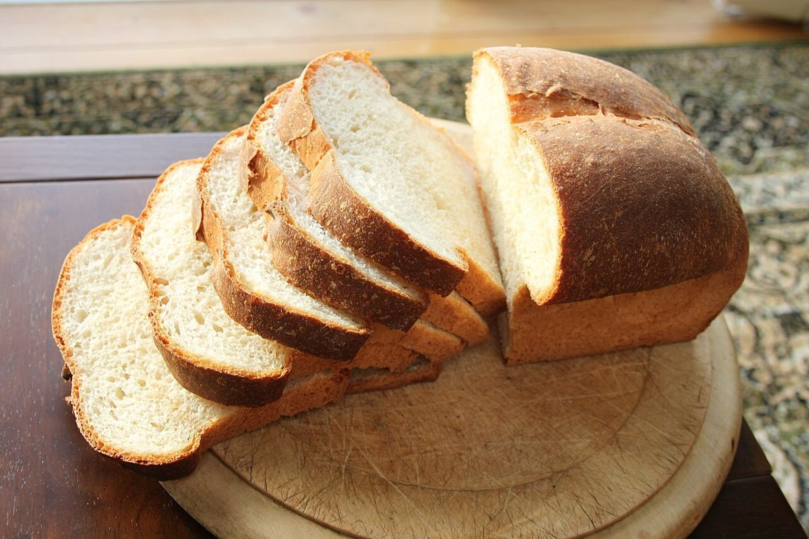

メニュー
メニュー
取り扱い内容・価格は準備中です。下の写真はすべてイメージで、Kateteの商品ではありません。
空欄の足し算
□ + □ = 準備中
ここに並ぶ見出しは、パンの写真の見た目から付けた制作側の仮の分類です。お店の取り扱いを示すものではありません。

木の板にのせた切り込みのある丸いパン/国外・撮影地不明のイメージ 丸いかたち
準備中

麦の穂の形に切り分けたバゲット/国外・撮影地不明のイメージ 細長いかたち
準備中

つやのあるクロワッサンの山/国外・撮影地不明のイメージ つやのあるかたち
準備中

白い布をかけたかごのロールパン/国外・撮影地不明のイメージ 小さなかたち
準備中

切り分けた角型のパン/国外・撮影地不明のイメージ 角のあるかたち
準備中

断面にレーズンが見えるパン/国外・撮影地不明のイメージ 断面のかたち
準備中

皿に重ねたスライスしたパン/国外・撮影地不明のイメージ 重ねたかたち
準備中

布の上の食パン型のパンとバター小皿/国外・撮影地不明のイメージ バターを添えたかたち
準備中